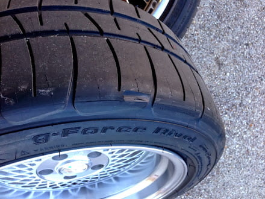

-
Hey im newbie and I was wondering what is the widest tire you could put on a 16 inch rim without rubbing , im planing on getting xxr/sportmax 002 size 16x8 0 offset , and on them bfgoodrich g-Force Sport COMP-2 tires size 245/50ZR16 front and back . I also plan on using tokico lowering springs . So am i in the clear? or do i have a problem . Ohh ya almost forgot also was wondering if upgraded z32 front calipers would fit . -
1st issues I see - Tokico springs are garbage
I also think 245/50 is asking a lot for 16x8 wheel.86na - BlueZ
Shiro #366 - Kouki Monster
85t - Mr Tickles -
I think he was looking for wheel fitment + tire question with rubbing than max tire and rimzzz sizes.
My Experience
Tokico Blue/HP Struts
Eibach Springs
Poly subframe bushing
Poly Differential Bushing
Pole Transmission Bushing
Poly Lower Control Arm Bushings
Poly or Delrin Tension Rod Bushings
Poly Endlinks/Sway Bar Bushings
Optional: Adjustable Top Hats for the front set at -2 degrees of camber at static
225/50 on 16x8
This will provide you a really nice handling car that still drives smooth for every day conditions.86na - BlueZ
Shiro #366 - Kouki Monster
85t - Mr Tickles -
I know the tires will fit on the rim because my cousin has the exact same tires on the exact same sized rim . so i know they will fit i want to know is if they will rub. crap i already ordered the tokico springs from the z store . adamvann3 isnt 225's on a 8 inch rim stretching it a little? dont you put 225's on 7 inch rims? -
I would try and return them. They are worse than stock springs. Do some research prior to purchasing.
I run 225/50 BFG Rivals on 16x9s. Pretty square to me. Every tire manufacture and model run a little different, I just think 245/50 is a bit much of tire for a 16x8 wheel.
86na - BlueZ
Shiro #366 - Kouki Monster
85t - Mr Tickles -
ohh ok im gunna call now and change my order from tokico springs to eibach. are the eibachs good for a car going for 260 hp? or is it going to squat in the rear and the front in going to lift? -
I think the squat is just part of driving a Z31. I'm sure the Eibachs will help though.
I have some 245/50/16 Aurora H107s from the scrap pile on my Starquest 16x8s. They fit the wheels fine and bulge very slightly.
As noted before, it depends on the tire. Some styles run thicker sidewalls, some have rim guards, some have tread that carries over into the sidewall. They all fit a little different.
Z32 caliper clearance will depend on the spoke design of the wheel.5.3 LSx Z31 -
Message me if you're interested in ST Springs. -
ohh thanks found what i wanted to hear , did you have the wheels and tires on your 300zx? if so how did they fit? -
They're on my 88 right now. They don't rub, but I've put maybe 3 miles on it with those wheels due to snow, and the tires are so bald that I can't hook up to make the car squat.ohh thanks found what i wanted to hear , did you have the wheels and tires on your 300zx? if so how did they fit?
I'm at stock ride height so I can't say anything about a lowered car.5.3 LSx Z31 -
ohh good good .. not good that sucks me too have lots and lots of snow here in Canada so my baby is stored . considering you sound like you know your stuff what do you think would happen with the wheel tire setup with eibach springs and tokico hp shocks , what do you think will happen?i r teh noobz;n766875 wrote:
so
They're on my 88 right now. They don't rub, but I've put maybe 3 miles on it with those wheels due to snow, and the tires are so bald that I can't hook up to make the car squat.
I'm at stock ride height so I can't say anything about a lowered car. -
All I can say is that the 245s fit my car with my wheel. I have stock turbo springs and have never been in a car with the Eibachs, so I can't say much past that.
That shock/spring combo is fairly popular. Do some searching and see if you can find a car with a similar setup.
I want to note: the 245s are only on the rear of my car. The fronts are 225/50s.5.3 LSx Z31 -
ohh they are only on the rear.... i checked a website that compares the specs of one wheel and tire to another and it said they will fit but check if there is 1.4 inchs of clearance towards the outside of the wheel. is there any reason you have 225's in front and not 245's? i saw a post which the guy had 17x9 running 255/40r17 all around and was running coilovers which drop the car way more than eibach springs . so im confident they will fit but also dont want to fuck upi r teh noobz;n766956 wrote: All I can say is that the 245s fit my car with my wheel. I have stock turbo springs and have never been in a car with the Eibachs, so I can't say much past that.
That shock/spring combo is fairly popular. Do some searching and see if you can find a car with a similar setup.
I want to note: the 245s are only on the rear of my car. The fronts are 225/50s. -
ZBUMs list for a 245 tire suggests a wheel between +13 and +32 offset in the front and +8 to +52 in the rear. Your 16x8s with a zero offset might rub a 245 tire according to his chart.
His minimum recommended offset for a 16x8 wheel on an 87 is +7. It looks like a 235 should fit at +7 offset.5.3 LSx Z31 -
One of the websites i checked that checks the size of the original with the offset and everything and compares to what you want to put on it , it says everything will clear .. id love to put 235's but cant find any

Copyright © 2006–. All rights reserved. Privacy Policy